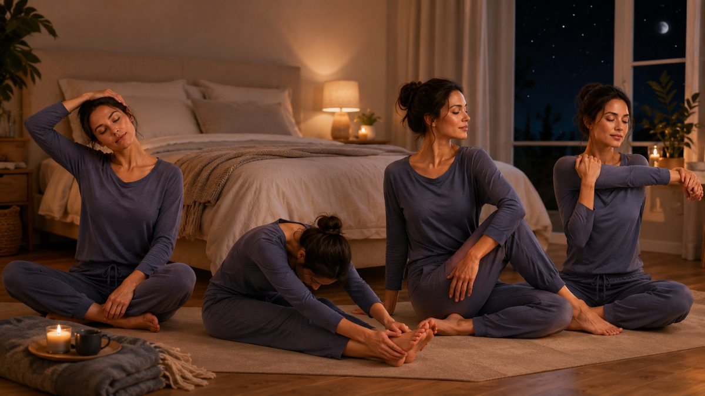

잠들기 전 굳은 몸을 가볍게 풀면, 누웠을 때 한결 편하고 잠도 깊어집니다. 거창한 운동이 아니라 침대 위에서 5분이면 충분합니다. 67 마사지 관리사들이 자기 전 루틴으로 권하는 동작을, 순서대로 정리했습니다.
먼저 천천히 코로 들이마시고 입으로 길게 내쉬는 호흡을 5번 반복합니다. 내쉴 때 어깨와 턱의 힘을 빼세요. 호흡이 느려지면 몸이 ‘쉬는 모드’로 전환되어, 이어지는 스트레칭 효과가 커집니다.
반동을 주지 말고 ‘늘어나는 지점에서 멈춰 호흡’하는 것이 핵심입니다. 아프지 않고 ‘시원하게 당기는’ 정도면 충분합니다. 통증을 참으며 무리하게 늘리면 오히려 긴장이 올라가 역효과가 납니다.
루틴 뒤에는 조명을 낮추고 스마트폰을 내려놓는 것이 좋습니다. 애써 이완시킨 몸을 다시 각성시키지 않기 위해서입니다. 실내는 약간 따뜻하게, 호흡은 계속 느리게 유지하세요.
종일 앉아 있어 골반·허리가 굳은 분, 어깨가 말려 잠자리가 불편한 분, 생각이 많아 잠들기 어려운 분께 권합니다. 다만 디스크·관절 통증 등 증상이 있으면 동작을 줄이거나 전문가와 상담 후 진행하세요. 매일 같은 시간에 반복하면 몸이 ‘이제 잘 시간’임을 학습합니다.
아침 스트레칭은 ‘몸을 깨우는’ 데 초점이 있어 다소 활기차게 하지만, 밤 스트레칭은 정반대입니다. 심박과 호흡을 끌어내려 ‘이제 잘 시간’이라는 신호를 주는 것이 목적입니다. 그래서 반동 없이 천천히, 호흡을 길게 내쉬는 방식이 핵심입니다.
각 동작에서 4초 들이마시고 6~8초로 길게 내쉬면, 내쉬는 호흡이 부교감 신경을 자극해 더 빨리 이완됩니다. 동작보다 호흡이 먼저라고 생각하면 효과가 커집니다. 머릿속이 복잡하면 숨의 길이만 세어도 생각이 가라앉습니다.
같은 5분이라도 밝은 조명 아래 스마트폰을 보며 하면 효과가 반감됩니다. 조명을 낮추고, 화면을 멀리 두고, 약간 따뜻한 실내에서 하면 몸이 훨씬 빨리 가라앉습니다. 매일 같은 시간에 반복하는 것이 무엇보다 중요합니다.
유연성이 부족하면 무릎을 살짝 굽히거나 가동 범위를 줄여 ‘당기는 느낌이 드는 지점’까지만 하세요. 반대로 여유가 있으면 호흡을 한두 번 더 늘려 머무릅니다. 단, 목을 강하게 돌리거나 허리를 비틀어 ‘우두둑’ 소리를 내려는 동작, 반동을 주는 동작은 피해야 합니다. 잠들기 전에는 ‘이완’이 목적이지 ‘운동’이 목적이 아니라는 점을 기억하세요.
마지막으로, 매일 같은 시간에 반복하는 것이 어떤 동작보다 중요합니다. 몸이 ‘이 순서 다음은 잠’이라고 학습하면, 같은 5분이라도 잠드는 속도가 확연히 달라집니다. 무리한 가동 범위보다 꾸준함이 수면의 질을 바꿉니다.
※ 본 글은 일반적인 컨디션 관리·이완을 위한 정보이며 의료 행위나 진단·치료가 아닙니다. 디스크·염좌·골절·임신 중 통증 등 의학적 증상이 있다면 마사지 전에 의사·물리치료사 등 전문가와 상담하시기 바랍니다.